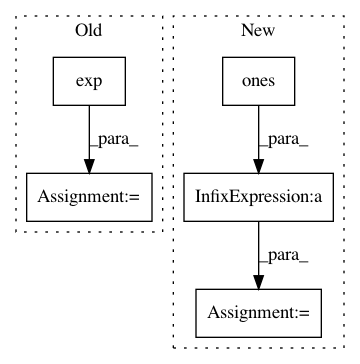

0b056a895e7729f6ade61a30e9fcb853dc4e371e,test/examples/test_white_noise_regression.py,TestWhiteNoiseGPRegression,test_posterior_latent_gp_and_likelihood_with_optimization,#TestWhiteNoiseGPRegression#Any#,99
Before Change
def test_posterior_latent_gp_and_likelihood_with_optimization(self, cuda=False):
train_x, test_x, train_y, test_y = self._get_data(cuda=cuda)
// We"re manually going to set the hyperparameters to something they shouldn"t be
likelihood = GaussianLikelihood(
noise_prior=SmoothedBoxPrior(exp(-3), exp(3), sigma=0.1),
noise_constraint=Positive(),
)
gp_model = ExactGPModel(train_x, train_y, likelihood)
mll = gpytorch.ExactMarginalLogLikelihood(likelihood, gp_model)
gp_model.rbf_covar_module.initialize(lengthscale=exp(1))
gp_model.mean_module.initialize(constant=0)
After Change
def test_posterior_latent_gp_and_likelihood_with_optimization(self, cuda=False):
train_x, test_x, train_y, test_y = self._get_data(cuda=cuda)
// We"re manually going to set the hyperparameters to something they shouldn"t be
likelihood = FixedNoiseGaussianLikelihood(torch.ones(11) * 0.001)
gp_model = ExactGPModel(train_x, train_y, likelihood)
mll = gpytorch.ExactMarginalLogLikelihood(likelihood, gp_model)
gp_model.rbf_covar_module.initialize(lengthscale=exp(1))
gp_model.mean_module.initialize(constant=0)
In pattern: SUPERPATTERN
Frequency: 3
Non-data size: 5
Instances
Project Name: cornellius-gp/gpytorch
Commit Name: 0b056a895e7729f6ade61a30e9fcb853dc4e371e
Time: 2019-04-05
Author: jrg365@cornell.edu
File Name: test/examples/test_white_noise_regression.py
Class Name: TestWhiteNoiseGPRegression
Method Name: test_posterior_latent_gp_and_likelihood_with_optimization
Project Name: brainiak/brainiak
Commit Name: 8a6ecfdb1759ad2f67492a983ec5f90b5c5dd3ae
Time: 2017-08-30
Author: lcnature@users.noreply.github.com
File Name: brainiak/reprsimil/brsa.py
Class Name: GBRSA
Method Name: _set_SNR_grids
Project Name: cornellius-gp/gpytorch
Commit Name: 0b056a895e7729f6ade61a30e9fcb853dc4e371e
Time: 2019-04-05
Author: jrg365@cornell.edu
File Name: test/examples/test_white_noise_regression.py
Class Name: TestWhiteNoiseGPRegression
Method Name: test_posterior_latent_gp_and_likelihood_without_optimization